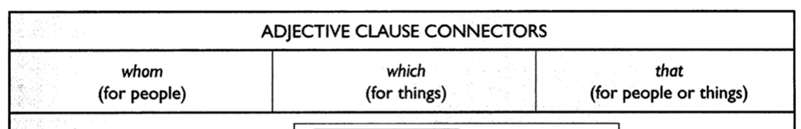
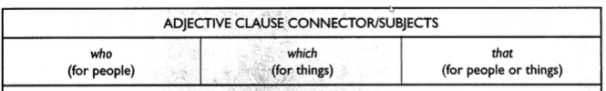

Materi Belajar
TOEFL — Skill 11 & 12
Adjective Clause Connectors
Pelajari teori lalu uji dengan latihan interaktif (feedback langsung).
SKILL 11 — Use Adjective Clause Connectors Correctly
Use Adjective Clause Connectors Correctly
Adjective clause adalah sebuah clause yang mendeskripsikan sebuah noun. Dikarenakan dia adalah sebuah clausa maka posisinya tepat setelah noun yang di deskripsikan. Contoh :
The woman is filling the glass that she put on the table.
The glass that she put on the table contains milk.
I liked the book which you recommended
The book which you recommended was interesting

📝 Latihan Interaktif — Skill 11
SKILL 12 — Use Adjective Clause Connetors/Subjcet Correctly
Use Adjective Clause Connetors/Subjcet Correctly
Di skill 11 kita tahu bahwa connector pada adjective clause digunakan untuk membuat clause yang berbentuk noun. Di skill 12 kita akan melihat bahwa dalam beberapa kasus, connector dari adjective clause tidak berfungsi hanya sebagai connector saja tetapi bisa menjadi subject dari clause tersebut. Contoh:
The woman is filling the glass that is on the table
The glass that is on the table contains milk
She needs a secretary who types fast
A secretary who types fast is invaluable
